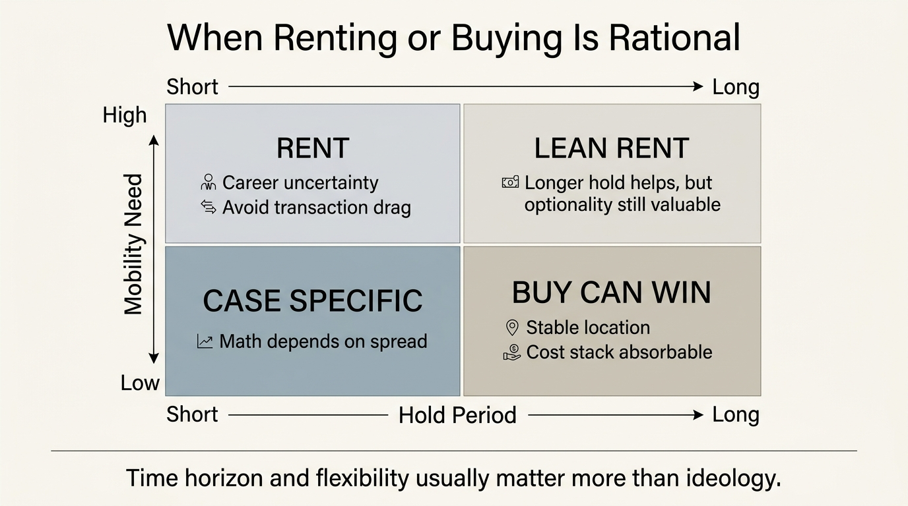

The Rent vs Buy Reversal
The old household rule said ownership was the disciplined choice and renting was a temporary compromise. That rule no longer clears the arithmetic by default. In the current rate and cost regime, buying still works for some households, but only after financing, taxes, insurance, maintenance, transaction drag, and mobility value are all counted honestly.
The reversal is not ideological. It is a shift in hurdle rate. Freddie Mac's 30-year fixed mortgage average was 6.30 percent on April 16, 2026. The U.S. Census Bureau reported median monthly owner costs for mortgaged households at $2,035 in 2024, while the fourth-quarter 2025 Housing Vacancy Survey put median asking rent for vacant rental units at $1,464. Those figures are not a full apples-to-apples comparison, but they make the regime clear: new buyers are entering with a much heavier monthly carry burden than the ownership script of the 2010s assumed.
Core thesis: buying is no longer the presumptive winner because the ownership stack widened faster than the rental stack. Ownership still works when tenure is long, balance-sheet resilience is strong, and local carry costs are tolerable. Renting wins more often when the monthly spread is wide, mobility matters, or the household cannot afford to turn housing into its dominant concentration bet.

Why The Old Rule Worked
The older ownership rule was built in a friendlier environment. Financing was cheaper, transaction friction could be amortized across longer expected holds, and appreciation plus principal paydown often outran the added carry burden. Sinai and Souleles also identified a more structural reason homeownership could make sense: the owner is buying a hedge against future rent risk, not only an asset with resale value. That hedge remains real.
What changed is the price of the hedge. When a new mortgage resets at a much higher rate than the embedded rates enjoyed by incumbent owners, the new buyer is not comparing rent with an abstract wealth-building story. The buyer is comparing rent with interest expense, property tax, insurance, maintenance volatility, closing costs, and capital tied up in one local asset. Under those terms the purchase has to earn its place again.
What The Current Data Supports
The official housing data does not show a rental market that became irrelevant. The Census Bureau's fourth-quarter 2025 Housing Vacancy Survey reported a rental vacancy rate of 7.2 percent, a homeownership rate of 65.7 percent, median asking rent of $1,464 for vacant rental units, and median asking sales price of $363,800 for vacant homes for sale. Renting remains a live market option, not a residual category defined only by households priced out of ownership.
Owner carry is also rising on its own terms. The Census Bureau's 2024 ACS release showed median monthly owner costs for mortgaged households at $2,035, up from $1,960 the prior year on an inflation-adjusted basis. That figure includes the categories that households often underweight when they talk loosely about building equity. Housing becomes fragile when the household budgets for mortgage payment but not for the full owner regime wrapped around it.
The financing burden stays elevated even before local taxes and insurance enter. A 6.30 percent 30-year mortgage is not a catastrophe, but it is a radically different starting point from the low-rate period that trained many buyers to treat ownership as the obvious default. The arithmetic has to be rerun from current inputs, not from a memory of cheaper money.
Where Buying Still Wins
Buying still works when expected tenure is long, location certainty is high, and the household can absorb maintenance and liquidity lock-up without weakening the rest of the balance sheet. The rent hedge matters more when a household expects to remain in the same market through several rent cycles. Ownership also works better when the purchase does not crowd out emergency reserves, retirement saving, or career flexibility.
Local structure matters as much as national averages. A household buying in a moderate-tax market with stable insurance cost and a probable ten-year hold is facing a different problem from a household buying in a volatile insurance zone, high-tax metro, or career-mobile phase of life. The phrase rent versus buy sounds universal. The economics are local, path-dependent, and balance-sheet specific.
Where Renting Wins More Often Now
Renting gains a clearer advantage when three conditions appear together. First, the monthly spread between rent and total owner carry is large. Second, the household expects uncertainty in job location, family needs, or preferred city. Third, the cash that would become down payment and closing cost can serve better uses elsewhere. In that setting the renter is not surrendering discipline. The renter is preserving optionality.
That optionality has measurable value. The FHFA's 2024 work on the lock-in effect documented how low-rate mortgages suppress mobility by making replacement housing materially more expensive. A renter avoids inheriting that same rigidity. In a labor market where household earnings can change through relocation, hybrid work, or industry shift, the ability to move without selling an illiquid asset is part of economic resilience, not an emotional preference.
The practical mistake is to compare rent with mortgage principal and stop there. Taxes, insurance, repairs, HOA dues where relevant, and transaction costs are all real. They are also uneven, which means they often strike exactly when the household already has thin liquidity. Buying a home at the edge of affordability is therefore not only a housing decision. It is an agreement to absorb future cash-flow shocks from one concentrated asset.

A Better Decision Framework
- Model total owner carry. Include mortgage payment, tax, insurance, HOA dues, maintenance reserve, and realistic repairs.
- Price tenure honestly. A five-year or shorter probable hold changes the math because transaction cost and uncertainty dominate appreciation stories.
- Count concentration risk. A down payment is still capital tied to one property, one metro, and one local tax and insurance regime.
- Treat mobility as an asset. The option to move for income, care needs, or lower fixed cost has real economic value.
- Separate status logic from yield logic. Many purchases still happen because ownership feels like social progress, not because the investment clears a disciplined hurdle.
This framework does not tell every household to rent. It does remove the lazy default that buying is automatically superior. Some households should buy and stay put. Others should rent longer, invest the spread, and keep their cash and location options alive. The correct standard is no longer symbolic adulthood. It is expected resilience.
Known, Inferred, And Unknown
| Category | Assessment |
|---|---|
| Known | Mortgage rates and median owner costs remain high enough that many new buyers face materially heavier monthly carry than renters. |
| Known | Renting remains a real market option with meaningful supply, not only a residual choice for households shut out of ownership. |
| Known | Homeownership still hedges future rent risk, especially for households with long, stable tenure. |
| Inferred | The practical decision now depends more on full cost accounting, tenure, and mobility value than on the old ownership default. |
| Unknown | How much a lower-rate cycle would restore buying's old edge once insurance, taxes, and maintenance inflation are carried through the model. |
The Practical Bottom Line
The reversal does not mean renting always wins. It means ownership no longer deserves a presumption of superiority. Buying is strongest when the household is certain about location, able to hold through cycles, and financially robust enough that the home does not dominate the rest of the balance sheet. Renting is strongest when the spread is wide, the future is uncertain, or optionality has high value.
The disciplined question is therefore narrow: does this property, in this market, on this balance sheet, offer better expected resilience than renting and investing the difference? For a growing share of households, the honest answer is no. That is the reversal.
Further Reading Inside The Site
This article connects directly to The Mortgage Lock-In Trap, The 2026 Housing Stall, The Hidden Costs of Ownership, and The Mobility Premium. Those pieces frame housing as a balance-sheet system rather than a status purchase.
Source List
U.S. Census Bureau. The Cost of Homeownership Continues to Rise. September 11, 2025.
Federal Reserve Bank of St. Louis, source Freddie Mac. 30-Year Fixed Rate Mortgage Average in the United States. Accessed April 24, 2026.
U.S. Census Bureau. Quarterly Residential Vacancies and Homeownership, Fourth Quarter 2025. February 3, 2026.
Sinai T, Souleles NS. Owner-Occupied Housing as a Hedge Against Rent Risk. NBER Working Paper 9462. 2003.
Federal Housing Finance Agency. The Geography of the Lock-In Effect: Which MSAs are Most Locked-In?. August 30, 2024.